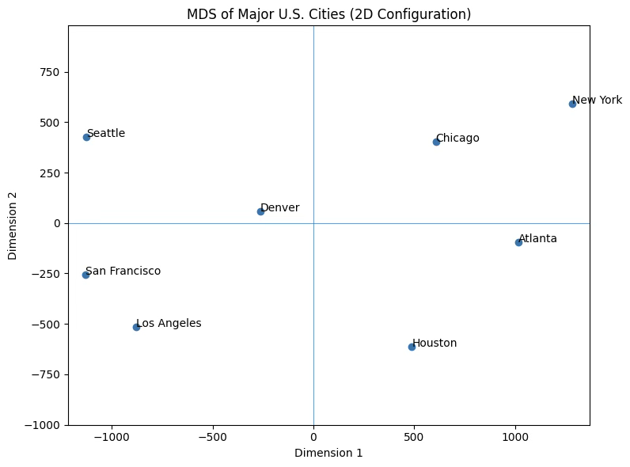
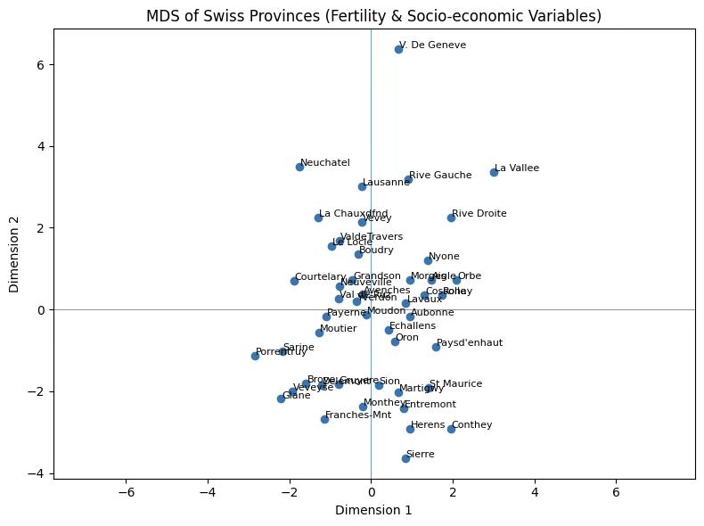
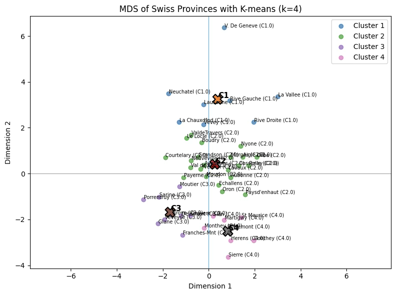
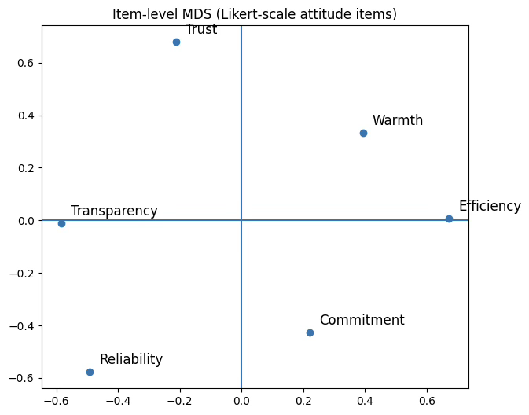
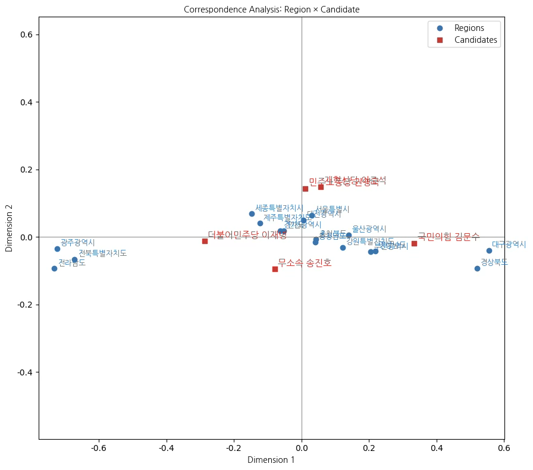
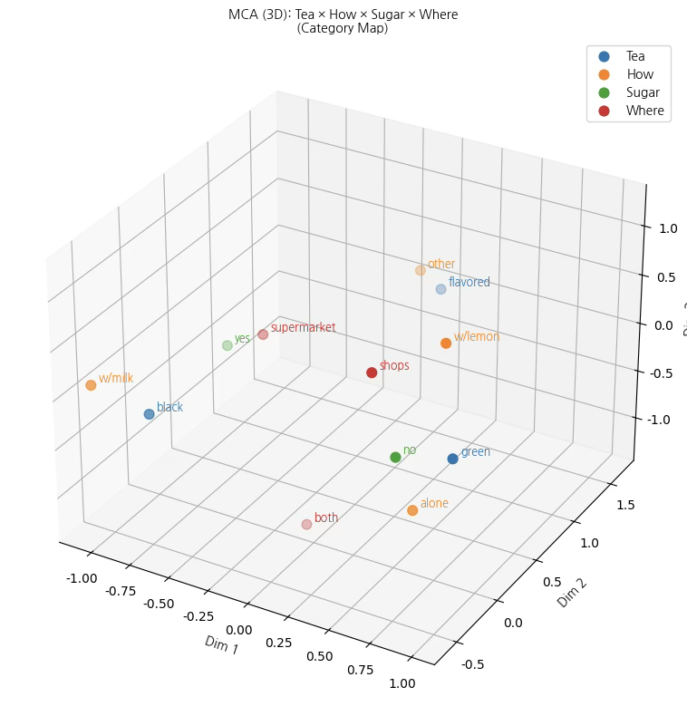

다변량분석 6. 다차원척도법과 대웅분석
Chapter 1. 다차원 척도법
다차원 척도법이란?
(1) 개념
다차원척도법(MDS)이란 주어진 n개의 개체 간 유사성 혹은 거리 정보를 이용하여 이들을 저차원의 가시적 공간, 일반적으로 2차원 또는 3차원 공간에 배치하는 기법이다. 핵심 목적은 고차원적 유사성 구조를 시각적으로 해석 가능한 형태로 축소하되, 원래 자료가 가진 상대적 거리 구조를 최대한 보존하는 것이다. 즉, 개체들이 서로 유사할수록 저차원 공간에서도 서로 가깝게, 유사하지 않을수록 멀리 배치되도록 한다.
MDS에서는 유사성을 거리 척도로 변환하거나, 혹은 직접 거리 행렬이 주어져 있는 경우 이를 그대로 사용한다. 이후 알고리즘은 해당 거리 구조를 가장 잘 재현하는 좌표들을 찾기 위해 스트레스(stress) 함수 또는 손실 함수를 최소화하는 방향으로 작동한다. 그 결과로 얻어진 저차원 좌표는 복잡한 다변량 구조를 직관적으로 파악할 수 있게 하며, 제품 비교, 소비자 인식 지도(perceptual map) 작성 등 다양한 분야에서 활용된다.
다차원척도법(MDS)이란 n개의 개체를 저차원의 가시적 공간, 일반적으로 2차원 공간에 배치하여 개체 간 유사성 구조를 시각적으로 표현하는 방법이다. 이를 위해서는 먼저 각 개체 간 거리 또는 유사성을 적절한 방식으로 측정해야 한다. MDS는 개체들 사이의 상대적 거리 관계를 유지하면서 이들을 평면 위에 배치하는 데 목적이 있으며, 이러한 점에서 군집분석과 유사해 보일 수 있다. 그러나 두 방법의 목적과 결과는 명확히 구별된다.
군집분석은 거리 또는 유사성이 가까운 개체들끼리 묶어 집단을 형성하는 데 초점을 둔 분석 방법이다. 즉, 개체들을 몇 개의 군집으로 분류하는 것이 주된 목적이다. 반면 다차원척도법은 개체 간 유사성을 2차원 또는 3차원 공간에 좌표 형태로 나타내어, 전체 구조를 시각적으로 파악할 수 있게 하는 데 목적이 있다. 따라서 군집분석이 집단화의 결과를 제공하는 분류 기법이라면, MDS는 개체들 사이의 인지적·심리적 또는 수량적 거리 구조를 시각적으로 해석할 수 있는 좌표를 제공하는 차원 축소 기법이다.
(2) 개체간 유사성 측정
다차원척도법(MDS)에서 가장 중요한 입력 자료는 개체 간 거리 또는 유사성 행렬이다. 이 거리 행렬을 어떻게 구성하느냐에 따라 MDS의 형태가 달라지며, 크게 metric 방법과 non-metric 방법으로 구분된다. 아래는 세 가지 대표적인 유사성 측정 방식에 대한 상세 설명이다.
측정형 변수 기반 거리: Euclidean distance
가장 전통적인 방식은 측정된 변수값을 이용하여 개체 간 거리를 직접 계산하는 방법이다. 예를 들어 제품에 대한 향기, 냄새 제거 성능, 사용 편리성 등의 속성이 모두 수치로 측정되어 있다면, 개체 \(i\)와 \(j\)간의 거리는 다음과 같은 유클리드 거리로 계산된다.
\(d_{ij} = \sqrt{\overset{p}{\sum_{k = 1}}(x_{ik} - x_{jk})^{2}}\), 여기에서 \(x_{ik}\)는 개체 \(i\)의 \(k\)번째 속성값, \(p\)는 속성(변수)의 수를 의미한다.
이 방법의 특징은 거리 값 자체가 수치적으로 의미 있는 척도(metric scale)를 가진다는 점이다. 변수들 간의 차이가 직접적으로 거리 계산에 반영되므로, 계산된 거리를 그대로 이용한 metric MDS의 적용이 가능하다. 다만 각 속성이 동일한 중요도를 가진다고 가정하는 것이 타당한지에 대한 검토가 필요하며, 변수의 단위 차이를 제거하기 위한 표준화 여부, 그리고 변수 간 상관 구조 등이 분석 결과의 품질에 중요한 영향을 미친다.
이와 같은 방식은 소비자 평가 점수(예: 1~10점), 화학적 성분이나 물리적 특성값과 같이 실측된 수치 자료, 또는 설문조사에서 사용되는 리커트(Likert) 척도와 같은 등간척도 자료에 널리 사용된다. 이러한 자료들은 이미 수량화가 이루어져 있으므로, 개체 간 거리를 계산하는 데 있어 가장 신뢰할 수 있는 정보원을 제공한다.
사람들이 유사성(거리)을 직접 평가하여 얻는 자료
두 번째 방법은 응답자들이 개체 쌍에 대해 유사성 또는 거리감을 직접 평가하도록 하여 자료를 수집하는 방식이다. 예를 들어 제품 A와 B의 유사성을 1에서 7 또는 1에서 10 사이의 점수로 표시하게 하거나, 두 제품이 얼마나 다르게 느껴지는지를 0에서 100 사이의 수치로 표현하게 하는 방식이 이에 해당한다. 이 방법은 개체에 대한 소비자의 인지적 거리를 직접 자료화한다는 점에서 중요한 장점을 가진다.
이러한 자료는 점수의 성격에 따라 metric MDS 또는 non-metric MDS로 구분하여 사용된다. 만약 점수 간의 간격이 실제 수량적 의미를 가진다고 판단되는 경우, 예컨대 유사성 1~10점에서 8점과 4점의 차이가 응답자들이 지각한 거리 차이를 그대로 반영한다고 볼 수 있을 때에는 metric 방법을 적용할 수 있다.
반대로 응답자의 평가는 순서 정보만을 담고 있으며, 각 점수 간 간격이 응답자마다 다르게 해석될 가능성이 큰 경우에는 non-metric MDS를 적용하는 것이 타당하다. 예를 들어 ”A-B가 A-C보다 더 유사하다”라는 순서적 정보만 신뢰되는 상황에서는 점수의 등간성을 가정하기 어렵기 때문에 순서(ordinal) 관계만을 이용하여 비모수적 변환 후 분석을 수행한다.
이 방식의 가장 큰 강점은 소비자의 실제 인식 구조를 직접 반영할 수 있다는 점이다. 그러나 단점도 분명하다. 개체가 n개일 때 응답자가 평가해야 하는 쌍의 수가 n(n-1)/2개로 매우 많아지므로, 응답 부담이 커지고 시간과 비용이 크게 증가한다. 그럼에도 불구하고 직접적 유사성 평가 자료는 실증 연구에서 가장 정밀한 정보를 제공한다는 점에서 여전히 널리 활용되는 방법이다.
평가자들이 개체를 자유롭게 분류 후 교차빈도표
세 번째 방법은 응답자들에게 개체들을 자유롭게 분류하도록 한 뒤, 동일한 분류군에 포함된 빈도를 이용하여 개체 간 유사성을 추정하는 방식이다. 즉, 응답자가 개체들을 자신의 기준에 따라 마음대로 묶도록 한 후, 특정 두 개체가 같은 그룹에 포함된 빈도가 높을수록 두 개체는 유사한 것으로 판단한다. 예를 들어 20명의 소비자가 제품들을 자유롭게 분류한 결과, A와 B를 같은 그룹에 넣은 사람이 18명이고 A와 C를 같은 그룹에 넣은 사람이 4명이라면, A–B는 높은 유사성을, A–C는 매우 낮은 유사성을 가진 것으로 해석한다.
이러한 자료는 일반적으로 공동 출현 행렬로 정리되며, 이후 이를 거리 행렬로 변환하여 MDS의 입력 자료로 사용한다. 개체 \(i\)와 \(j\)의 거리 \(d_{ij}\)는 흔히 다음과 같이 정의된다.
\[d_{ij} = 1 - \frac{\text{두 개체를 같은 집단에 분류한 응답자 수}}{\text{전체 응답자 수}}\]
이 방법이 non-metric MDS에 적합한 이유는, 공동 분류 빈도라는 자료가 본질적으로 순서 정보 또는 범주적 의미만을 갖는다는 점에 있다. 빈도 값이 단순히 ”더 많이 함께 분류되었다”는 서열적 정보를 나타낼 뿐, 수량 자체의 절대적인 간격이나 비율적 의미를 지니는 것은 아니기 때문이다. 따라서 이러한 자료는 거리의 등간성이나 비율적 해석을 전제로 하는 metric MDS보다는, 순서 구조를 유지하면서 거리 변환을 수행하는 non-metric MDS에서 다루는 것이 타당하다.
이 방식의 장점은 응답자에게 개체 간 유사성을 직접 수치로 평가하게 하는 방식보다 부담이 적으며, 소비자가 자연스럽게 지각하는 분류 기준이 그대로 반영된다는 점이다. 반면 거리 계산이 직접적이지 않고 빈도를 기반으로 간접적으로 구성되며, 응답자마다 분류 기준이 다를 수 있으므로 결과 해석이 어려워질 수 있다는 한계도 존재한다.
2. 기본 알고리즘
MDS 알고리즘은 거리 또는 유사성 행렬을 기반으로 개체의 내적 행렬을 복원하고, 이를 고유값분해하여 저차원 좌표를 얻는 방식으로 작동한다. metric MDS는 고전적 행렬 대수 접근법을 사용하여 직접 좌표를 계산하지만, non-metric MDS는 순서 정보를 유지하는 비모수적 거리 변환과 스트레스 최소화 반복 알고리즘을 통해 최적의 좌표를 찾는다.
유사성 행렬 계산
분석의 출발점은 n개의 개체 간 거리 또는 유사성 행렬이다. 측정형 변수로부터 계산한 거리, 응답자의 직접적 유사성 평가, 자유 분류에서 얻어진 공동 출현 빈도 기반 거리 등이 모두 사용될 수 있다. metric MDS는 거리의 등간성을 가정하며, non-metric MDS는 순서 정보만을 사용하여 거리의 형태를 비모수적으로 변환하여 사용한다.
유사성 행렬의 제곱 계산
고전적 MDS는 거리 행렬을 제곱한 행렬 \(D^{(2)}\)를 구성하는 것으로 시작한다. \(d_{ij}^{2}\), 제곱 거리는 이후 내적행렬 복원을 위한 변환에 사용된다.
이중 중심화를 통한 내적 행렬 계산
거리 행렬을 직접 좌표로 변환할 수 없기 때문에, ”이중 중심화”를 통해 내적행렬 B를 복원한다. 중심화 행렬을 \(H = I - \frac{1}{n}\mathbf{11}'\)라고 하면, 행렬 \(B = - \frac{1}{2}HD^{(2)}H\)는 저차원 공간에서의 점들의 내적을 의미하며, 고전적 MDS에서 핵심 역할을 한다.
고유값분해(Eigendecomposition)
복원된 내적 행렬 B에 대하여 고유값분해를 수행한다. \(B = Q\Lambda Q'\), 여기에서 \(\Lambda\)는 고유값 행렬, Q는 고유벡터 행렬이다. 고유값은 저차원 공간에서의 분산(정보량)에 대응하며, 양의 고유값만이 유효한 좌표를 구성한다.
좌표 계산: 차원 축소
원하는 차원(보통 2차원)을 \(r\)이라고 하면, 상위 \(r\)개의 고유값과 그에 대응하는 고유벡터를 사용하여 좌표 행렬 \(X = Q_{r}\Lambda_{r}^{\frac{1}{2}}\)를 계산한다. 이때 X의 각 행은 개체 하나가 저차원 공간에서 가지는 좌표이다.
적합도 평가 (Stress 또는 RSQ)
metric/non-metric MDS에서는 주어진 거리와 저차원에서의 거리 간 차이를 평가하기 위해 적합도 지표를 계산한다. 대표적으로 다음과 같은 크루스칼(Kruskal) 스트레스 함수가 사용된다.
\(\text{Stress} = \sqrt{\frac{\sum_{i < j}(d_{ij} - {\widehat{d}}_{ij})^{2}}{\sum_{i < j}^{}d_{ij}^{2}}}\). 값이 작을수록 적합도가 좋다. Stress 값은 원래 거리와 저차원에서 재현된 거리 간의 차이를 상대적으로 나타내는 척도로서, 값이 작을수록 모델이 자료의 거리 구조를 더 잘 재현한다는 의미를 가진다. 일반적으로 Stress 해석은 크루스칼(Kruskal, 1964)이 제시한 기준을 따르며 다음과 같이 이해된다.
| Stress 값 | 해석 |
| 0.05 이하 | 매우 좋음 (Excellent fit) |
| 0.05 ~ 0.10 | 좋음 (Good fit) |
| 0.10 ~ 0.20 | 보통 (Fair fit) |
| 0.20 이상 | 나쁨 (Poor fit) |
반복 알고리즘 (Non-Metric MDS)
non-metric MDS는 직접 좌표가 계산되지 않기 때문에 순위 조건을 충족하도록 거리 변환을 반복하며 Stress를 최소화한다. Stress 최소화 반복 절차가 사용된다. 가장 대표적인 방법이 SMACOF 알고리즘 이다.
metric MDS는 반복 없이 한 번의 고유값분해로 해결되는 반면, non-metric MDS는 순서 제약을 고려해야 하므로 수렴까지 다수의 반복이 필요하다.
3. 사례실습
(1) 미국 10개 도시 거리
다차원척도법의 원리를 설명할 때 가장 널리 사용되는 예제는 미국 주요 대도시들 간의 실제 물리적 거리(도로거리 또는 직선거리)를 이용하여 이 도시들을 2차원 공간에 배치하는 사례이다. 도시 간 거리는 이미 수치적 의미를 갖는 metric 자료이므로, 고전적 MDS를 적용할 수 있다.
이 도시들 사이의 실제 거리(마일 단위)를 행렬로 구성하고, 이를 MDS에 적용하면 저차원의 좌표를 얻을 수 있다. 알고리즘은 도시 간 거리 구조를 가능한 한 보존하는 방향으로 2차원 공간에서의 위치를 결정하며, 그 결과 도시들이 실제 미국 지도와 매우 유사한 형태로 배치된다.
import numpy as np
import pandas as pd
import matplotlib.pyplot as plt
from sklearn.manifold import MDS
# -----------------------------
# 1. 도시 이름 정의
# -----------------------------
cities = [
"New York",
"Chicago",
"Atlanta",
"Houston",
"Denver",
"Los Angeles",
"San Francisco",
"Seattle"
]
# -----------------------------
# 2. 도시 간 거리 행렬 (예시, 단위: mile)
# - 대략적인 미국 지도 기반 예시값
# - 대칭 행렬, 대각선은 0
# -----------------------------
D = np.array([
[ 0, 713, 748, 1420, 1627, 2451, 2565, 2402], # New York
[ 713, 0, 587, 1081, 920, 1745, 1858, 1721], # Chicago
[ 748, 587, 0, 702, 1400, 1935, 2135, 2180], # Atlanta
[1420, 1081, 702, 0, 1020, 1374, 1631, 1895], # Houston
[1627, 920, 1400, 1020, 0, 830, 957, 1020], # Denver
[2451, 1745, 1935, 1374, 830, 0, 381, 960], # Los Angeles
[2565, 1858, 2135, 1631, 957, 381, 0, 679], # San Francisco
[2402, 1721, 2180, 1895, 1020, 960, 679, 0], # Seattle
])
# (선택) Pandas DataFrame으로 보기 좋게 출력
df_dist = pd.DataFrame(D, index=cities, columns=cities)
print("도시 간 거리 행렬 (마일 단위):")
print(df_dist)
# -----------------------------
# 3. Metric MDS 실행
# -----------------------------
mds = MDS(
n_components=2, # 2차원으로 축소
dissimilarity='precomputed', # 이미 거리행렬이므로 'precomputed'
random_state=42,
normalized_stress=False # sklearn 1.6 이상이면 True/False 지정 가능
)
coords = mds.fit_transform(D) # shape: (8, 2)
stress = mds.stress_
print("\nMDS 좌표 (2차원):")
for city, (x, y) in zip(cities, coords):
print(f"{city:12s} : ({x:8.3f}, {y:8.3f})")
print(f"\nStress 값: {stress:,.3f}")
# -----------------------------
# 4. 결과 시각화 (Perceptual Map)
# -----------------------------
plt.figure(figsize=(8, 6))
plt.scatter(coords[:, 0], coords[:, 1])
for i, city in enumerate(cities):
plt.text(coords[i, 0] + 0.02, coords[i, 1] + 0.02, city, fontsize=10)
plt.title("MDS of Major U.S. Cities (2D Configuration)")
plt.xlabel("Dimension 1")
plt.ylabel("Dimension 2")
plt.axhline(0, linewidth=0.5)
plt.axvline(0, linewidth=0.5)
plt.gca().set_aspect("equal", adjustable="datalim") # 비율 유지
plt.tight_layout()
plt.show()도시 간 거리 행렬 (마일 단위):
New York Chicago Atlanta Houston Denver Los Angeles San Francisco Seattle
New York 0 713 748 1420 1627 2451 2565 2402
Chicago 713 0 587 1081 920 1745 1858 1721
Atlanta 748 587 0 702 1400 1935 2135 2180
Houston 1420 1081 702 0 1020 1374 1631 1895
Denver 1627 920 1400 1020 0 830 957 1020
Los Angeles 2451 1745 1935 1374 830 0 381 960
San Francisco 2565 1858 2135 1631 957 381 0 679
Seattle 2402 1721 2180 1895 1020 960 679 0
MDS 좌표 (2차원):
New York : (1284.692, 592.056)
Chicago : ( 608.177, 404.009)
Atlanta : (1015.790, -95.546)
Houston : ( 488.391, -613.292)
Denver : (-262.049, 57.935)
Los Angeles : (-877.823, -515.130)
San Francisco : (-1131.511, -255.654)
Seattle : (-1125.668, 425.620)
Stress 값: 33,543.450

(2) 측정형 지표 metric
이 자료는 1888년경 스위스의 프랑스어 사용 47개 주(province)에 대한 표준화된 출생지표와 사회경제적 지표를 포함하고 있다.
| 변수 | 설명 |
| Fertility | Ig, 일반적으로 사용되는 표준화된 출생력 지표 |
| Agriculture | 남성 중 농업을 직업으로 하는 비율 (%) |
| Examination | 군 징집 검사에서 최고 등급을 받은 지원자의 비율 (%) |
| Education | 징집 대상자 중 초등교육 이상(고등 교육 수준 포함)을 받은 비율 (%) |
| Catholic | 가톨릭 인구 비율 (%) — 가톨릭 대 프로테스탄트 구분 |
| Infant_Mortality | 1년 미만 생존한 영아 비율(영아 사망률, %) |
다차원 척도법
import pandas as pd
import numpy as np
import matplotlib.pyplot as plt
from sklearn.preprocessing import StandardScaler
from sklearn.manifold import MDS
# 1. 데이터 불러오기
swiss = pd.read_excel("/content/drive/MyDrive/eBook publish/swiss.xlsx", index_col=0) # 첫 열을 index로
# 2. 변수 표준화
scaler = StandardScaler()
X_scaled = scaler.fit_transform(swiss.values)
# 3. 유클리드 거리행렬 계산
from sklearn.metrics import pairwise_distances
D = pairwise_distances(X_scaled, metric="euclidean")
# 4. Metric MDS (sklearn)
mds = MDS(
n_components=2,
dissimilarity="precomputed",
random_state=42,
normalized_stress=False # sklearn 버전에 따라 옵션
)
coords = mds.fit_transform(D)
stress = mds.stress_
print("Stress:", stress)
print("\nMDS 좌표 (2차원):")
for name, (x, y) in zip(swiss.index, coords):
print(f"{name:15s} : ({x:8.3f}, {y:8.3f})")
# 5. 결과 시각화
plt.figure(figsize=(8, 6))
plt.scatter(coords[:, 0], coords[:, 1])
for name, (x, y) in zip(swiss.index, coords):
plt.text(x + 0.02, y + 0.02, name, fontsize=8)
plt.axhline(0, linewidth=0.5)
plt.axvline(0, linewidth=0.5)
plt.gca().set_aspect("equal", adjustable="datalim")
plt.xlabel("Dimension 1")
plt.ylabel("Dimension 2")
plt.title("MDS of Swiss Provinces (Fertility & Socio-economic Variables)")
plt.tight_layout()
plt.show()stress 값이 매우 높은 이유는 사회경제적 지표간 구조가 복잡하여(상관계수가 낮음) 2D로 재현이 어렵다는 것을 의미하며 3D MDS 또는 non-metric MDS가 더 적합할 가능성이 높다.
stress: 263.25291828843683
MDS 좌표 (2차원):
Courtelary : ( -1.896, 0.701)
Delemont : ( -1.213, -1.849)
Franches-Mnt : ( -1.151, -2.677)
Moutier : ( -1.267, -0.560)
(이하 생략)

군집개수 4개 k-means 군집분석 결과 다차원 공간에 시각화
from sklearn.cluster import KMeans
# 1. K-means 군집분석 (4개 군집)
kmeans = KMeans(n_clusters=4, n_init=20, random_state=42)
clusters = kmeans.fit_predict(X_scaled) # 표준화된 원자료 기준으로 군집화
# (선택) swiss 데이터프레임에 군집번호 붙이기
swiss['cluster'] = clusters # 0,1,2,3
# 2. 군집 결과를 MDS 좌표 위에 올려 그리기
plt.figure(figsize=(8, 6))
for g in range(4):
mask = (clusters == g)
plt.scatter(
coords[mask, 0],
coords[mask, 1],
label=f"Cluster {g+1}",
alpha=0.7
)
# 각 군집의 중심(평균 좌표)을 MDS 평면에서 계산
center = coords[mask].mean(axis=0)
plt.scatter(
center[0], center[1],
marker='X', s=200, edgecolor='k', linewidth=1.5
)
plt.text(center[0] + 0.03, center[1] + 0.03,
f"C{g+1}", fontsize=11, weight='bold')
for name, (x, y, g) in zip(swiss.index, np.c_[coords, clusters]):
# 각 점 옆에 지명 + 군집번호도 표시 (원하면)
plt.text(x + 0.02, y + 0.02, f"{name} (C{g+1})", fontsize=7)
plt.axhline(0, linewidth=0.5)
plt.axvline(0, linewidth=0.5)
plt.gca().set_aspect("equal", adjustable="datalim")
plt.xlabel("Dimension 1")
plt.ylabel("Dimension 2")
plt.title("MDS of Swiss Provinces with K-means (k=4)")
plt.legend()
plt.tight_layout()
plt.show()
주성분 분석
군집을 구성하는 변수가 모두 계량형으로 측정된 경우, 관측치 간의 구조를 2차원 공간에서 표현하기 위한 절차로는 다차원척도법보다 주성분분석을 적용하는 것이 방법론적으로 더 적합하다. 그 근거는 다음과 같다.
첫째, MDS에서 도출되는 차원(예: Dimension 1, Dimension 2)은 단지 거리(dissimilarity) 보존을 목적으로 산출된 좌표축이며, 그 축 자체가 어떠한 통계적 속성이나 변수 조합을 반영한다는 근거가 존재하지 않는다. MDS의 축은 회전 불변성 또한 보장되지 않으며, 따라서 차원의 의미를 명확하게 정의하거나 해석하기 어렵다.
반면, PCA는 원 변수를 선형결합하여 주성분을 구성하고, 각 주성분에 대한 적재값을 통해 해당 성분이 어떤 변수군의 변동을 주도하는지 해석할 수 있다. 이러한 구조적 해석 가능성 덕분에 PC1, PC2와 같은 차원에 대하여 명확한 개념적 명명이 가능하다.
따라서 군집 분석 결과를 시각적으로 제시함과 동시에 차원의 통계적·개념적 속성을 해석해야 하는 목적을 가진 경우, PCA의 2개 주성분을 활용하여 2차원 공간을 구성하는 방법이 MDS보다 분명한 이점을 제공한다. 즉, PCA를 활용하면 군집 간 위치 관계뿐만 아니라 각 차원이 의미하는 바를 이론적·실증적으로 설명할 수 있어, 해석 가능성 측면에서 우수하다.
from sklearn.decomposition import PCA
# 1. PCA(2개 성분)
pca = PCA(n_components=2)
pcs = pca.fit_transform(X_scaled) # 이미 X_scaled가 표준화된 상태
# 2. 데이터프레임으로 보기 좋게
pcs_df = pd.DataFrame(pcs, columns=["PC1", "PC2"], index=swiss.index)
print(pcs_df.head())
# 3. 산점도 그리기
plt.figure(figsize=(8,6))
plt.scatter(pcs_df["PC1"], pcs_df["PC2"], alpha=0.7)
# labels
for name, (x, y) in pcs_df.iterrows():
plt.text(x + 0.02, y + 0.02, name, fontsize=8)
plt.axhline(0, color='gray', linewidth=0.5)
plt.axvline(0, color='gray', linewidth=0.5)
plt.xlabel(f"PC1 ({pca.explained_variance_ratio_[0]*100:.1f}% var)")
plt.ylabel(f"PC2 ({pca.explained_variance_ratio_[1]*100:.1f}% var)")
plt.title("PCA Biplot (PC1 vs PC2)")
plt.gca().set_aspect("equal", adjustable="datalim")
plt.tight_layout()
plt.show()PC1: ”전통적·농업 중심성 요인(Traditional–Agricultural Axis)“
PC1은 Fertility와 Agriculture가 높은 값을 보이는 지역에서 양의 방향으로 나타나며, 반대로 Education과 Examination 수준이 높은 지역에서는 음의 방향을 보이는 구조를 보인다. 이는 출산율이 높고 농업 비중이 큰 전통적 사회경제 특성과 교육 및 군사시험 성취도가 높고 근대화된 지역적 특성 사이의 대립축을 반영한다. 따라서 PC1은 지역의 전통성–근대화 또는 농업 중심성–교육·도시화 축을 설명하는 성분으로 해석할 수 있다.
PC2: ”종교적 구성 및 건강지표 요인(Religiosity–Health Axis)“
PC2는 Catholic 비율과 Infant.Mortality(영아사망률) 변수의 기여도가 커서 가톨릭 신자 비중이 높고 영아사망률이 상대적으로 높은 지역에서 양의 방향을 보인다. 반면 이러한 특성이 낮은 지역은 음의 방향에 위치한다. 따라서 PC2는 종교적 구성(가톨릭 비율)과 기초 보건 상태(영아사망률)를 함께 반영하는 종교·보건 요인 또는 가톨릭성–보건수준 축으로 해석할 수 있다.
PC1 PC2
province_name
Courtelary 0.363552 1.399420
Delemont -1.634175 1.026047
Franches-Mnt -2.104200 0.746024
Moutier -0.747608 0.595892
Neuveville 0.381528 0.448845
# PCA 좌표 위에 군집 결과 올리기
plt.figure(figsize=(8,6))
for g in range(4):
mask = (clusters == g)
plt.scatter(
pcs[mask, 0],
pcs[mask, 1],
label=f"Cluster {g+1}",
alpha=0.7
)
# 각 군집 중심(PC1, PC2에서의 평균점)
center = pcs[mask].mean(axis=0)
plt.scatter(center[0], center[1],
marker='X', s=200, edgecolor='k', linewidth=1.5)
plt.text(center[0] + 0.05, center[1] + 0.05,
f"C{g+1}", fontsize=11, weight='bold')
# 각 지역 이름 + 군집 표시
for name, (x, y, g) in zip(swiss.index, np.c_[pcs, clusters]):
plt.text(x + 0.03, y + 0.03, f"{name} (C{g+1})", fontsize=7)
plt.axhline(0, color='gray', linewidth=0.5)
plt.axvline(0, color='gray', linewidth=0.5)
plt.xlabel(f"PC1 ({pca.explained_variance_ratio_[0]*100:.1f}% var)")
plt.ylabel(f"PC2 ({pca.explained_variance_ratio_[1]*100:.1f}% var)")
plt.title("PCA Scatter Plot with K-means Clusters (k=4)")
plt.legend()
plt.gca().set_aspect("equal", adjustable="datalim")
plt.tight_layout()
plt.show()
(3) 리커트 척도 문항 다차원척도 non-metric
리커트 척도는 본질적으로 순서척도이므로 non-metric MDS가 이론적으로 더 타당하다. 다만 실증 분석에서는 리커트 척도를 등간척도로 간주하여 metric MDS를 적용하는 경우도 흔하며, 분석 목적과 자료 특성에 따라 두 방식 모두 선택될 수 있다. 척도의 등간성을 엄밀히 보장하기 어렵다는 점을 고려하면, 비모수적 거리 변환을 허용하는 non-metric 접근이 보다 보수적이고 안정적인 분석 방법이라고 할 수 있다.
사례데이터 만들기
자신이 속한 조직에 대하여 응답자 20명이 다음 6개 항목에 대하여 5점 리커트 척도로 측정하였다고 하자.
| 변수 | 내용 |
| Trust | 조직을 신뢰한다 |
| Warmth | 조직이 따뜻하게 느껴진다 |
| Reliability | 약속을 잘 지킨다 |
| Efficiency | 효율적으로 운영된다 |
| Transparency | 의사결정이 투명하다 |
| Commitment | 조직에 헌신하고 싶다 |
import numpy as np
import pandas as pd
from sklearn.manifold import MDS
from sklearn.metrics import pairwise_distances
import matplotlib.pyplot as plt
np.random.seed(7622)
att = pd.DataFrame({
"Trust": np.random.randint(1, 6, 20),
"Warmth": np.random.randint(1, 6, 20),
"Reliability": np.random.randint(1, 6, 20),
"Efficiency": np.random.randint(1, 6, 20),
"Transparency": np.random.randint(1, 6, 20),
"Commitment": np.random.randint(1, 6, 20)
})
# 기존 att 행 수 파악
n = att.shape[0]
# Subject1 ~ Subject20 식 이름 만들기
att.index = [f"Subject{i+1}" for i in range(n)]
print(att.head())Trust Warmth Reliability Efficiency Transparency Commitment
Subject1 4 4 1 3 4 4
Subject2 2 2 4 2 3 4
Subject3 1 3 3 4 4 4
Subject4 5 2 1 4 1 3
Subject5 1 5 5 3 5 3
Item(variable)-level MDS
corr = att.corr()
D_item = 1 - corr # 상관 거리
mds = MDS(n_components=2, dissimilarity="precomputed", random_state=42)
coords_item = mds.fit_transform(D_item)
coords_item_df = pd.DataFrame(coords_item, index=corr.index, columns=["Dim1", "Dim2"])
coords_item_dfDim1 Dim2
Trust -0.563689 -0.370335
Warmth 0.536723 0.343738
Reliability 0.581360 -0.191912
Efficiency -0.755631 0.404456
Transparency -0.006990 0.485314
Commitment 0.208226 -0.671261
plt.figure(figsize=(7,6))
plt.scatter(coords_item[:,0], coords_item[:,1])
for name, (x,y) in coords_item_df.iterrows():
plt.text(x+0.03, y+0.03, name, fontsize=12)
plt.axhline(0); plt.axvline(0)
plt.title("Item-level MDS (Likert-scale attitude items)")
plt.show()
Subject-level MDS
from sklearn.metrics import pairwise_distances
from sklearn.manifold import MDS
# 개체 거리행렬
D_subj = pairwise_distances(att.values, metric="euclidean")
# MDS
mds2 = MDS(n_components=2, dissimilarity="precomputed", random_state=42)
coords_subj = mds2.fit_transform(D_subj)
print(coords_subj)[[-0.63406539 3.36331313]
[-0.40346786 -4.1378684 ]
[-2.86082664 2.31117055]
[ 1.39073653 3.89379038]
(이하 생략)
plt.figure(figsize=(8,6))
plt.scatter(coords_subj[:,0], coords_subj[:,1], s=30, alpha=0.7)
# subject 이름 붙이기
for name, (x, y) in zip(att.index, coords_subj):
plt.text(x + 0.02, y + 0.02, name, fontsize=9)
plt.title("Subject-level MDS (Respondents)")
plt.xlabel("Dim1")
plt.ylabel("Dim2")
plt.axhline(0); plt.axvline(0)
plt.show()
(5) 교차빈도표 다차원척도 non-metric
데이터 만들기
5개 브랜드에 대한 4개 연령대 1997명의 선호도를 조사한 후 생성한 교차표이다.
import pandas as pd
table = pd.DataFrame({
"BrandA": [120, 210, 180, 60],
"BrandB": [ 85, 190, 240,125],
"BrandC": [ 40, 80, 110, 95],
"BrandD": [ 22, 75, 98,110],
"BrandE": [ 12, 20, 45, 80]
}, index=["Teen","20s","30s","40s"])
print(table)BrandA BrandB BrandC BrandD BrandE
Teen 120 85 40 22 12
20s 210 190 80 75 20
30s 180 240 110 98 45
40s 60 125 95 110 80
행 프로파일 MDS
# 행(연령대)의 유클리드 거리
from sklearn.metrics import pairwise_distances
D = pairwise_distances(table, metric="euclidean")
# 행(연령대)의 MDS
from sklearn.manifold import MDS
mds = MDS(n_components=2, dissimilarity="precomputed", random_state=42)
coords = mds.fit_transform(D)
import matplotlib.pyplot as plt
plt.figure(figsize=(7,6))
plt.scatter(coords[:,0], coords[:,1])
for name, (x,y) in zip(table.index, coords):
plt.text(x+0.02, y+0.02, name, fontsize=12)
plt.axhline(0); plt.axvline(0)
plt.title("MDS of Age Groups based on Brand Purchase Pattern")
plt.xlabel("Dimension 1")
plt.ylabel("Dimension 2")
plt.show()빈도표를 이용하여 행·열 범주 간의 관계를 해석할 때, 행 프로파일과 열 프로파일을 각각 따로 살펴보는 것보다는 두 프로파일을 동시에 하나의 공간에 표현하는 것이 훨씬 효율적인 해석을 제공한다. 이는 두 범주 집합이 동일한 차원축에서 어떤 방향성과 거리를 갖는지를 직관적으로 확인할 수 있기 때문이다.
다차원척도법(MDS) 역시 행 프로파일과 열 프로파일을 동일 좌표평면에 함께 배치할 수 있으며, 이러한 점에서는 대응분석(CA)의 Biplot과 유사한 해석 구조를 갖는다. 즉, 두 방법 모두 범주 간 상대적 거리와 패턴의 유사성을 시각적으로 표현한다는 공통점을 지닌다.
그러나 두 방법이 사용하는 유사성(거리) 척도는 본질적으로 다르다.
대응분석은 카이제곱(χ²) 거리 기반으로 범주형 자료의 빈도 구조를 해석하는 데 특화되어 있으며,
MDS는 사용자가 정의한 거리(유클리드 거리, 상관 기반 거리 등)를 바탕으로 범주 간 구조를 구성한다.
따라서 빈도표 기반 행·열 프로파일의 활용 측면에서는 두 방법이 유사하게 보이지만, 거리 정의의 차이로 인해 결과의 형태와 해석 방향은 서로 달라질 수 있음을 유념해야 한다.

열 프로파일 MDS
# 브랜드(열) 기준 거리행렬 계산
from sklearn.metrics import pairwise_distances
from sklearn.manifold import MDS
import matplotlib.pyplot as plt
# table.T 는 행↔열 전치 (브랜드를 행으로)
D_brand = pairwise_distances(table.T, metric="euclidean")
# MDS 실행
mds_brand = MDS(n_components=2, dissimilarity="precomputed", random_state=42)
coords_brand = mds_brand.fit_transform(D_brand)
# 시각화
plt.figure(figsize=(7,6))
plt.scatter(coords_brand[:,0], coords_brand[:,1])
for name, (x, y) in zip(table.columns, coords_brand):
plt.text(x+0.02, y+0.02, name, fontsize=12)
plt.axhline(0)
plt.axvline(0)
plt.title("MDS of Brands based on Age-Group Purchase Patterns")
plt.xlabel("Dimension 1")
plt.ylabel("Dimension 2")
plt.show()
Chapter 2. 대응분석
1. 대응분석이란?
개념
대응분석은 범주형 변수의 범주 간 유사성을 시각적으로 표현하기 위한 탐색적 자료 분석 기법이다. 특히, 교차표(분할표) 형태로 정리된 자료에서 행 범주와 열 범주를 동시에 저차원 공간(주로 2차원)에 좌표로 나타내어 범주 간의 구조적 관계와 연관성을 파악하는 데 활용된다.
복잡한 분할표의 정보를 직관적으로 해석 가능한 시각적 구조로 변환하여, 어떤 행 범주가 어떤 열 범주와 가까운지, 범주들 사이에 어떤 패턴이나 군집이 존재하는지를 쉽게 탐색할 수 있도록 해주는 기법이다. 즉, 대응분석은 범주형 데이터의 행·열 범주를 동시에 시각화하여 관계를 탐색하는 기법이다.
기원
대응분석의 이론적‧수리적 기반과 기하적 표현 방식은 서로 다른 학자들에 의해 독립적으로 발전해 왔다.
수리적 기원: Hirshfeld(1930)는 상관구조와 분할표의 연관성을 해석하는 수리적 틀을 제시하였다. 이 연구가 이후 대응분석의 수학적 기반을 형성하는 중요한 출발점이 되었다.
기하적 발전: 1960년대 프랑스 Jean-Paul Benzécrii와 그의 연구 그룹은 분할표 자료를 기하학적 공간에 배치하여 해석하는 방법을 체계화하고, 범주형 자료 분석 전반에 대응분석을 적극 활용함으로써 기법을 크게 확장시켰다. 오늘날 사용되는 대응분석의 좌표계 구성, 특이값 분해(SVD) 기반 해석 등은 이 시기에 정립되었다.
일본의 발전: 1950년대 일본의 Chikio Hayashi는 범주형 자료 분석을 위한 수량화 제3방법을 개발했으며, 이는 대응분석과 유사한 목적과 구조를 지닌 기법으로 평가된다. 일본 학계에서는 이 접근을 통해 범주형 자료 분석이 활발히 발전하였다. 기법의 수리적 기반은 Hirshfeld(1930), 기하적·응용적 발전은 **Benzécri(1960s)**에 의해 확립되었다. 일본의 Hayashi의 수량화 이론 역시 대응분석과 유사한 분석적 맥락에서 발전하였다.
RXC 분할표
두 범주형 변수 X(R개 범주, 원인), Y(C개 범주, 결과변인)의 교차표는 다음과 같다.
Y X |
1 | 2 | … | C | Total |
| 1 | π11 | π12 | … | π1c | π1+ |
| 2 | π21 | π22 | … | π2c | π2+ |
| … | … | … | … | … | … |
| R | πr1 | πr2 | … | πrc | πr+ |
| Total | π+1 | π+2 | … | π+c | π++ |
\(\pi_{ij}\) : (X, Y) 결합밀도함수, \(\pi_{i +}\): X 주변밀도함수, \(\pi_{+ j}\) : Y 주변밀도함수
Homogeneity (동질성) 검정
각 행에 대해 열의 분포가 동일한가?
귀무가설 : \(H_{0}:\pi_{ij} = \pi_{kj}forallj = 1,2,.\ldots,C\)
Independence (독립성) 검정
(X, Y)는 서로 독립인가? 두 변수가 독립이라면 (\(P(X = x,Y = y) = P(X = x)P(Y = y)\))이므로 귀무가설은 다음과 같다.
귀무가설 : \(H_{0}:\pi_{ij} = \pi_{i +}\pi_{+ j}\)
검정통계량
동질성, 독립성 검정 모두 검정통계량은 동일하다. (i, j) 셀의 관측빈도를 \(O_{ij} = n_{ij}\) 라 하자. i-행의 행 관측빈도 합을 \(n_{i +}\), j-열의 열 관측빈도 합을 \(n_{+ j}\), 총 관측빈도를 \(n_{+ +}\)라 정의하자.
만약 귀무가설이 맞다면 (i, j) 셀의 기대빈도는 \(E_{ij} = \frac{n_{i +}n_{+ j}}{n_{+ +}}\)이다.
검정통계량
\(TS = \frac{(O_{ij} - E_{ij})^{2}}{E_{ij}} \sim \chi^{2}(df = (R - 1)(C - 1))\)
*) Cochran Theorem : 셀의 기대빈도가 5이하인 셀이 전체 셀 중 20% 미만이면 교차검정통계량은 \(\chi^{2}\)- 분포를 따른다. 만약 이를 위반하면 Fisher Exact 검정 방법을 적용한다.
2. 기본 알고리즘
\((i,j)\)셀의 빈도 \(n_{ij} \geq 0\)의 i번째 행의 각 열빈도 \((n_{i1},n_{i2},\ldots,n_{iC})\)은 총빈도가 \(n_{i +}\)이고 \(C\)개 범주를 갖는 다항(Multinomial) 분포이다.
순서1: 다항분포의 \((i,j)\) 확률은 상대빈도 \(f_{ij} = \frac{n_{ij}}{n_{i +}}\)을 계산한다. 이것을 행 프로파일이라 정의한다.
순서2: 각 행의 상대빈도 \(f_{i1},f_{i2},\ldots,f_{iC}\)를 선형계수로 (주성분 분석과 유사) 하여 좌표 계산한다.
순서3: \(R_{i} = (\frac{f_{i1}}{f_{i +}},\frac{f_{i2}}{f_{i +}},\ldots,\frac{f_{iC}}{f_{i +}})\)가 C 차원 가중 유크리드 공간의 좌표이다. 가중 유클리드 공간이란에서는 두 개의 좌표 (\(R_{i},R_{j}\)) 사이의 거리를 다음과 같이 정의한다. \(D(R_{i},R_{j}) = \sqrt{\frac{\sum_{c = 1}^{C}(\frac{f_{ic}}{f_{i +}} - \frac{f_{jc}}{f_{j +}})^{2}}{f_{+ c}}}\)
순서4: 같은 방식으로 열 프로파일의 좌표 및 개체 거리 계산하고 행, 열 프로파일을 각각 2차원 공간에 표현한다.
3. 사례분석
(1) 집안일 x 담당 교차 빈도표
데이터 만들기
import pandas as pd
# 집안일x담당(아내, 남편, 공동, 교대) 교차표이다.
house = pd.DataFrame({
"Wife": [156, 124, 120, 45, 67],
"Husband": [ 14, 11, 58, 135, 21],
"Joint": [100, 120, 160, 80, 50],
"Altering": [ 12, 20, 40, 18, 10]
}, index=["Laundry", "Meals", "Shopping", "Finance", "Repairs"])
print(house)Wife Husband Joint Altering
Laundry 156 14 100 12
Meals 124 11 120 20
Shopping 120 58 160 40
Finance 45 135 80 18
Repairs 67 21 50 10
from scipy.stats import chi2_contingency
# 독립성 검정 χ² test
chi2, p, dof, expected = chi2_contingency(house)
print("=== Chi-square Test for Independence ===")
print(f"Chi-square statistic : {chi2: .3f}")
print(f"Degrees of freedom : {dof}")
print(f"P-value : {p: .5f}")
# 행 퍼센트 (Row Percentages)
row_percent = house.div(house.sum(axis=1), axis=0) * 100
print("=== Row Percentages (%) ===")
print(row_percent)통계적으로 매우 유의미하게, 가사 항목의 종류와 누가 그 항목을 수행하는지에 대한 책임 분담 방식은 서로 독립이 아니며, 강한 연관성이 있다고 결론 내릴 수 있습니다. 즉, 어떤 가사일을 수행하느냐에 따라 주된 수행 주체가 달라진다는 것을 의미한다.
=== Chi-square Test for Independence ===
Chi-square statistic : 296.741
Degrees of freedom : 12
P-value : 0.00000
세탁(Laundry)은 아내가 약 55%로 가장 큰 비중을 차지하고 공동 수행이 약 35%로 뒤를 이어 전형적인 아내 중심 혹은 공동 수행 중심의 작업으로 나타난다. 식사 준비(Meals) 역시 아내가 약 45%, 공동 수행이 약 44%로 두 방식이 거의 균형을 이루며 남편 참여는 4% 수준으로 낮다. 장보기(Shopping)는 공동 수행이 약 42%로 가장 높고 아내 단독이 32%, 남편이 15% 수준을 차지해 가족 구성원 간의 분담이 상대적으로 활발한 작업임을 보여준다. 반면 재정 관리(Finance)는 남편이 49%로 압도적으로 높은 참여율을 보이며, 아내는 16%, 공동 수행은 29%로 나타나 유일하게 남편 중심의 작업이라는 특징을 가진다. 수리 작업(Repairs)은 아내 45%, 공동 34%로 세탁이나 식사 준비와 유사하게 아내·공동 중심의 구조를 보이며, 남편의 비중은 14%로 낮아 일반적 기대와 다른 패턴을 보여준다.
=== Row Percentages (%) ===
Wife Husband Joint Altering
Laundry 55.319149 4.964539 35.460993 4.255319
Meals 45.090909 4.000000 43.636364 7.272727
Shopping 31.746032 15.343915 42.328042 10.582011
Finance 16.187050 48.561151 28.776978 6.474820
Repairs 45.270270 14.189189 33.783784 6.756757
prince 모듈 활용 대응분석
# (1) prince 모듈 설치 (Colab)
!pip install -q princeimport pandas as pd
import matplotlib.pyplot as plt
import prince
# (2) CA 적합
ca = prince.CA(n_components=2,
n_iter=10,
copy=True,
check_input=True,
engine="scipy",
random_state=42)
ca = ca.fit(house)
# (3) 좌표 추출 (principal coordinates)
row_coords = ca.row_coordinates(house) # 행(집안일)
col_coords = ca.column_coordinates(house) # 열(담당자)
print("Row coordinates:\n", row_coords)
print("\nColumn coordinates:\n", col_coords)
# (4) 고유값/관성(= inertia)
eigenvalues = ca.eigenvalues_
# 설명된 관성 비율
explained_inertia = eigenvalues / eigenvalues.sum()
print("Eigenvalues:\n", eigenvalues)
print("Explained inertia (ratio):\n", explained_inertia)
print("Explained inertia (%):\n", explained_inertia * 100)
# (5) Biplot (직접 그리기)
plt.figure(figsize=(8,7))
# rows
plt.scatter(row_coords[0], row_coords[1], marker="o", label="Tasks")
for name, (x, y) in row_coords.iterrows():
plt.text(x+0.02, y+0.02, name, fontsize=11)
# cols
plt.scatter(col_coords[0], col_coords[1], marker="s", label="Persons")
for name, (x, y) in col_coords.iterrows():
plt.text(x+0.02, y+0.02, name, fontsize=11, fontweight="bold")
plt.axhline(0, linewidth=0.7)
plt.axvline(0, linewidth=0.7)
plt.gca().set_aspect("equal", adjustable="datalim")
plt.xlabel("Dim 1")
plt.ylabel("Dim 2")
plt.title("Correspondence Analysis Biplot (prince)")
plt.legend()
plt.tight_layout()
plt.show()대응분석 결과, 집안일 유형과 담당자 간의 관계는 2차원 공간에서 명확한 구조를 보인다. 제1차원(Dim 1)은 전체 관성의 약 91.7%를 설명하는 주된 축으로, 집안일 수행에서 성별 분화 정도를 가장 강하게 반영하는 차원으로 해석된다. 이 축에서 Finance와 Husband가 동일한 방향(양의 방향)으로 크게 떨어져 위치하고 있어, 재정 관련 집안일이 남편에게 강하게 귀속되는 경향을 보임을 시사한다. 반면 Laundry와 Meals는 Dim 1의 음의 방향에 위치하며, Wife와 공간적으로 근접해 있어 해당 활동들이 아내 중심적으로 수행되는 집안일임을 보여준다.
제2차원(Dim 2)은 약 8.3%의 관성을 설명하는 보조적 차원으로, 집안일 수행 방식의 차이를 세분화하는 역할을 한다. 이 차원에서 Laundry–Wife는 상대적으로 상단에 위치하여 전형적인 단독 수행 성격을 나타내는 반면, Shopping, Joint, Altering는 하단부에 함께 분포하며 공동 수행 또는 교대 수행의 성격이 강한 활동으로 구분된다. 특히 Shopping은 원점 근처에 위치하면서 Joint와 가깝게 나타나, 특정 담당자에 귀속되기보다는 가족 구성원 간 분담이 비교적 유연한 집안일임을 시사한다.
한편 Repairs는 Dim 1에서는 아내 쪽에 가깝지만, Dim 2에서는 중립적 위치를 보이며 다른 집안일과는 다소 분리된 양상을 나타낸다. 이는 수선·보수 활동이 특정 성별에 강하게 고정되기보다는 상황에 따라 담당이 달라지는 특성을 지닐 가능성을 시사한다.
종합하면, 대응분석 결과는 집안일 수행이 단일한 성별 구도로 설명되기보다는, 아내 중심형(Laundry, Meals), 남편 중심형(Finance), 그리고 공동·혼합형(Shopping, Altering)으로 구조화되어 있음을 명확히 보여준다. 이러한 결과는 단순한 비율 비교를 넘어, 집안일 유형과 담당자 간의 관계를 다차원적 공간에서 직관적으로 파악할 수 있게 해 준다는 점에서 의미가 있다.
Row coordinates:
0 1
Laundry -0.394625 0.178859
Meals -0.353594 -0.056338
Shopping -0.010353 -0.179201
Finance 0.828223 0.067011
Repairs -0.120338 0.095699
Column coordinates:
0 1
Wife -0.338852 0.128318
Husband 0.930497 0.079204
Joint -0.102391 -0.107858
Altering 0.033226 -0.296209
Eigenvalues:
[0.19924861 0.01810192]
Explained inertia (ratio):
[0.91671557 0.08328443]
Explained inertia (%):
[91.67155667 8.32844333]

다차원척도법 행/열 프로파일 bipolar
import numpy as np
import pandas as pd
import matplotlib.pyplot as plt
from sklearn.metrics import pairwise_distances
from sklearn.manifold import MDS
# -----------------------------------------
# 0. 교차표 (이미 house가 있다면 이 부분은 생략)
# -----------------------------------------
house = pd.DataFrame({
"Wife": [156, 124, 120, 45, 67],
"Husband": [ 14, 11, 58, 135, 21],
"Joint": [100, 120, 160, 80, 50],
"Altering": [ 12, 20, 40, 18, 10]
}, index=["Laundry", "Meals", "Shopping", "Finance", "Repairs"])
# -----------------------------------------
# 1. 행/열 프로파일 (비율)
# - 행 프로파일: 각 집안일을 100%로 했을 때 담당자 비율
# - 열 프로파일: 각 담당자를 100%로 했을 때 집안일 비율
# -----------------------------------------
row_prof = house.div(house.sum(axis=1), axis=0) # 5×4
col_prof = house.div(house.sum(axis=0), axis=1).T # 4×5 (전치해서 열을 "행"으로 사용)
# -----------------------------------------
# 2. 행·열 프로파일별 거리행렬 (유클리드 거리)
# -----------------------------------------
D_row = pairwise_distances(row_prof.values, metric="euclidean")
D_col = pairwise_distances(col_prof.values, metric="euclidean")
# -----------------------------------------
# 3. Metric MDS (2차원) – 행/열 따로
# -----------------------------------------
mds = MDS(n_components=2, dissimilarity="precomputed", random_state=42)
row_coords = mds.fit_transform(D_row) # (5×2)
col_coords = mds.fit_transform(D_col) # (4×2)
row_coords_df = pd.DataFrame(row_coords, index=house.index, columns=["Dim1","Dim2"])
col_coords_df = pd.DataFrame(col_coords, index=house.columns, columns=["Dim1","Dim2"])
# -----------------------------------------
# 4. 스케일 맞추기
# - 두 해를 같은 그림에 올리기 위해
# 열 좌표를 행 좌표의 분산에 맞춰 rescale
# -----------------------------------------
scale = row_coords_df.std(axis=0) / col_coords_df.std(axis=0)
col_coords_aligned = col_coords_df * scale
# -----------------------------------------
# 5. MDS-biplot 그리기
# -----------------------------------------
plt.figure(figsize=(8,7))
# 행(집안일) – 파란 원
plt.scatter(row_coords_df["Dim1"], row_coords_df["Dim2"],
marker="o", color="tab:blue", label="Tasks")
for name, (x, y) in row_coords_df.iterrows():
plt.text(x+0.02, y+0.02, name, color="tab:blue", fontsize=11)
# 열(담당자) – 빨간 사각형 (스케일 조정된 좌표 사용)
plt.scatter(col_coords_aligned["Dim1"], col_coords_aligned["Dim2"],
marker="s", color="tab:red", label="Persons")
for name, (x, y) in col_coords_aligned.iterrows():
plt.text(x+0.02, y+0.02, name, color="tab:red", fontsize=11, weight="bold")
plt.axhline(0, color="gray", linewidth=0.7)
plt.axvline(0, color="gray", linewidth=0.7)
plt.gca().set_aspect("equal", adjustable="datalim")
plt.xlabel("Dimension 1 (MDS)")
plt.ylabel("Dimension 2 (MDS)")
plt.title("MDS Biplot of House Tasks × Person\n(Profiles + Euclidean distance)")
plt.legend()
plt.tight_layout()
plt.show()
(2) 21대 대선 후보자 지역별 특표수
import pandas as pd
df = pd.DataFrame({
"개혁신당 이준석": [
78704, 816435, 161579, 116094, 62104, 135376, 94724,
168473, 655346, 25004, 63177, 176739, 60822, 67961,
36909, 111092, 86984
],
"국민의힘 김문수": [
483360, 3504620, 1123843, 1159594, 79937, 1103913, 393549,
1146238, 2738405, 83965, 353180, 776952, 110624, 134996,
145290, 600108, 457065
],
"더불어민주당 이재명": [
449161, 4821148, 851733, 442683, 844682, 379130, 470321,
895213, 3105459, 140620, 315820, 1044295, 1111941,
1023272, 228729, 661316, 501990
],
"무소속 송진호": [
1137, 8356, 2678, 1788, 934, 1362, 1109,
2099, 5998, 235, 899, 2098, 2104, 1719,
528, 1519, 1228
],
"민주노동당 권영국": [
9422, 84074, 21809, 13884, 8767, 12531, 9905,
18189, 83900, 2961, 9299, 20743, 9352,
10061, 6191, 12893, 10169
]
}, index=[
"강원특별자치도", "경기도", "경상남도", "경상북도", "광주광역시",
"대구광역시", "대전광역시", "부산광역시", "서울특별시",
"세종특별자치시", "울산광역시", "인천광역시", "전라남도",
"전북특별자치도", "제주특별자치도", "충청남도", "충청북도"
])
print(df)개혁신당 이준석 국민의힘 김문수 더불어민주당 이재명 무소속 송진호 민주노동당 권영국
강원특별자치도 78704 483360 449161 1137 9422
경기도 816435 3504620 4821148 8356 84074
경상남도 161579 1123843 851733 2678 21809
경상북도 116094 1159594 442683 1788 13884
광주광역시 62104 79937 844682 934 8767
(이하 생략)
import prince
import matplotlib.pyplot as plt
# 대응분석
ca = prince.CA(n_components=2,
n_iter=10,
copy=True,
check_input=True,
engine="scipy", #
random_state=42)
ca = ca.fit(df)
# 차원 좌표 출력
row_coords = ca.row_coordinates(df) # 지역 좌표
col_coords = ca.column_coordinates(df) # 후보 좌표
print(row_coords, col_coords)
eigenvalues = ca.eigenvalues_
explained_inertia = eigenvalues / eigenvalues.sum()
# (4) 고유값/관성(= inertia) 설병비율
print("Eigenvalues:", eigenvalues)
print("Explained inertia (%):", explained_inertia * 100)0 1
강원특별자치도 0.121599 -0.031163
경기도 -0.062447 0.018612
경상남도 0.218601 -0.041902
경상북도 0.520749 -0.092644
광주광역시 -0.723672 -0.034695
(이하 생략)
0 1
개혁신당 이준석 0.056695 0.149126
국민의힘 김문수 0.333431 -0.018318
더불어민주당 이재명 -0.287291 -0.012566
무소속 송진호 -0.079156 -0.095681
민주노동당 권영국 0.011667 0.143204
Eigenvalues: [0.08681782 0.00228203]
Explained inertia (%): [97.43879148 2.56120852]
# ===============================
# Matplotlib 한글 폰트 설정 (Colab)
# ===============================
!apt-get -qq install fonts-nanum
import matplotlib.pyplot as plt
import matplotlib.font_manager as fm
plt.rcParams['font.family'] = 'NanumGothic'
plt.rcParams['axes.unicode_minus'] = False
# 그래프 경고 출력 제거
import logging
logging.getLogger("matplotlib.font_manager").setLevel(logging.ERROR)import matplotlib.pyplot as plt
import matplotlib.font_manager as fm
# -------------------------------------------------
# 1. 한글 폰트: 파일 경로 기반 (findfont 우회)
# -------------------------------------------------
font_path = "/usr/share/fonts/truetype/nanum/NanumGothic.ttf"
fp = fm.FontProperties(fname=font_path)
# -------------------------------------------------
# 2. Figure
# -------------------------------------------------
plt.figure(figsize=(9, 8))
# -------------------------------------------------
# 3. 행 좌표 (지역)
# -------------------------------------------------
plt.scatter(
row_coords[0],
row_coords[1],
marker="o",
color="tab:blue",
label="Regions"
)
for name, (x, y) in row_coords.iterrows():
plt.text(
x + 0.01, y + 0.01,
name,
fontsize=9,
fontproperties=fp,
color="tab:blue"
)
# -------------------------------------------------
# 4. 열 좌표 (후보)
# -------------------------------------------------
plt.scatter(
col_coords[0],
col_coords[1],
marker="s",
color="tab:red",
label="Candidates"
)
for name, (x, y) in col_coords.iterrows():
plt.text(
x + 0.01, y + 0.01,
name,
fontsize=11,
fontweight="bold",
fontproperties=fp,
color="tab:red"
)
# -------------------------------------------------
# 5. 기준선 및 축 설정
# -------------------------------------------------
plt.axhline(0, color="gray", linewidth=0.7)
plt.axvline(0, color="gray", linewidth=0.7)
plt.gca().set_aspect("equal", adjustable="datalim")
# -------------------------------------------------
# 6. 라벨·제목
# -------------------------------------------------
plt.xlabel("Dimension 1", fontproperties=fp)
plt.ylabel("Dimension 2", fontproperties=fp)
plt.title("Correspondence Analysis: Region × Candidate", fontproperties=fp)
# -------------------------------------------------
# 7. 범례
# -------------------------------------------------
plt.legend(prop=fp)
plt.tight_layout()
plt.show()대응분석 결과, 지역별 득표 구조와 후보 간의 관계는 제1차원에서 매우 뚜렷한 분화 양상을 보인다. 제1차원(Dimension 1)은 전체 관성의 약 97.4%를 설명하는 지배적인 축으로, 한국 선거에서 전통적으로 관찰되는 지역 기반 정치 성향의 분화를 거의 대부분 반영하는 차원으로 해석된다.
대응분석에서 지역과 후보가 공간적으로 가까이 위치한다는 것은, 해당 지역에서 그 후보의 상대적 득표 비중이 높다는 의미이며, 원점에 가까울수록 전국 평균적인 득표 패턴을 따른다고 해석한다. 본 분석 결과는 한국 선거에서 잘 알려진 영남–호남의 지역적 정치 분화가 여전히 강하게 작동하고 있음을 통계적으로 확인해 주며, 동시에 수도권과 충청권이 상대적으로 중도적·혼합적 성격을 띠고 있음을 보여준다.

제1차원(Dimension 1): 지역 정치 성향 분화 축
제1차원에서 광주광역시, 전라남도, 전북특별자치도는 음의 방향에 강하게 위치하며, 더불어민주당 이재명 후보와 공간적으로 근접해 있다. 이는 해당 지역들이 다른 지역에 비해 이 후보에게 상대적으로 높은 득표 비중을 보이는 구조임을 의미한다. 즉, 이들 지역은 전국 평균 대비 민주당 후보 지지가 뚜렷한 지역으로 분류된다.
반대로 대구광역시, 경상북도는 제1차원의 양의 방향 끝에 위치하며, 국민의힘 김문수 후보와 가장 가까운 위치를 차지한다. 이는 영남권 일부 지역에서 보수 성향 후보에 대한 상대적 지지 집중 현상이 강하게 나타남을 시사한다. 이러한 배치는 단순한 득표수 크기가 아니라, 각 지역 내부에서의 후보 간 상대적 득표 구조가 크게 다르다는 점을 시각적으로 보여준다.
수도권 및 충청권(서울특별시, 인천광역시, 경기도, 충청남·북도)은 제1차원에서 원점 부근에 비교적 가깝게 분포하며, 특정 후보에 대한 극단적인 쏠림보다는 전국 평균과 유사한 득표 구조를 보이는 지역군으로 해석된다.
제2차원(Dimension 2): 군소·대안 후보의 차별화 축
제2차원(Dimension 2)은 약 2.6%의 관성을 설명하는 보조적 차원으로, 전체 구조를 좌우하지는 않지만 군소 정당 및 대안 후보의 미묘한 지지 패턴을 구분하는 역할을 한다. 이 차원에서 민주노동당 권영국 후보는 상단에 위치하여, 특정 지역(예: 일부 수도권·특별자치시)과의 상대적 연관성을 나타낸다.
한편 무소속 송진호 후보는 하단부에 위치하여, 주요 정당 후보들과는 다른 독립적인 득표 구조를 갖는 후보임을 보여준다. 다만 이들의 좌표는 원점에 비교적 가까워, 전국적으로는 제한적인 영향력을 갖는 후보임을 시사한다.
(3) 다차원 대응분석 (삼차원 이상)
데이터
import numpy as np
import pandas as pd
np.random.seed(42)
n = 400 # 응답자 수
tea = np.random.choice(["black", "green", "flavored"], size=n, p=[0.45, 0.35, 0.20])
# tea에 따라 how가 조금 달라지도록(연관 구조를 일부러 넣음)
how = []
for t in tea:
if t == "black":
how.append(np.random.choice(["alone", "w/milk", "w/lemon", "other"], p=[0.25, 0.55, 0.10, 0.10]))
elif t == "green":
how.append(np.random.choice(["alone", "w/milk", "w/lemon", "other"], p=[0.50, 0.10, 0.25, 0.15]))
else: # flavored
how.append(np.random.choice(["alone", "w/milk", "w/lemon", "other"], p=[0.35, 0.15, 0.15, 0.35]))
how = np.array(how)
# sugar는 how에 따라 약간 연관
sugar = []
for h in how:
if h in ["w/milk", "other"]:
sugar.append(np.random.choice(["yes", "no"], p=[0.65, 0.35]))
else:
sugar.append(np.random.choice(["yes", "no"], p=[0.35, 0.65]))
sugar = np.array(sugar)
# where는 tea에 따라 약간 연관
where = []
for t in tea:
if t == "green":
where.append(np.random.choice(["supermarket", "shops", "both"], p=[0.25, 0.45, 0.30]))
else:
where.append(np.random.choice(["supermarket", "shops", "both"], p=[0.45, 0.25, 0.30]))
where = np.array(where)
df_tea = pd.DataFrame({
"Tea": tea,
"How": how,
"Sugar": sugar,
"Where": where
})
print(df_tea.head())Tea How Sugar Where
0 black alone no both
1 flavored other yes supermarket
2 green w/milk yes supermarket
3 green w/lemon no shops
4 black w/milk yes shops
(이하 생략)
# !pip -q install prince
import prince
mca = prince.MCA(
n_components=3, # ✅ 3차원
n_iter=10,
copy=True,
check_input=True,
engine="sklearn",
random_state=42
)
mca = mca.fit(df_tea)
# 범주(레벨) 좌표
cat_coords = mca.column_coordinates(df_tea)
print(cat_coords)
#설명력(관성)도
eigs = mca.eigenvalues_
ratio = eigs / eigs.sum()
print("Eigenvalues:", eigs)
print("Explained inertia (%):", ratio * 100)0 1 2
Tea__black -0.746388 -0.508416 -0.096227
Tea__flavored -0.016041 1.606115 -0.009891
Tea__green 0.988373 -0.275884 0.132016
How__alone 0.713766 -0.195411 -0.591800
How__other -0.176395 1.660154 0.078443
How__w/lemon 0.938484 -0.275501 1.233502
How__w/milk -1.058829 -0.600962 0.117182
Sugar__no 0.565563 -0.110402 -0.194316
Sugar__yes -0.600546 0.117231 0.206335
Where__both -0.037239 -0.011676 -1.277173
Where__shops 0.483176 -0.233871 0.703561
Where__supermarket -0.437806 0.234898 0.309031
Eigenvalues: [0.43805111 0.34071936 0.26249185]
Explained inertia (%): [42.06923674 32.72176029 25.20900298]
import matplotlib.pyplot as plt
import matplotlib.font_manager as fm
from mpl_toolkits.mplot3d import Axes3D # noqa
# 한글 폰트
font_path = "/usr/share/fonts/truetype/nanum/NanumGothic.ttf"
fp = fm.FontProperties(fname=font_path)
# 3차원 좌표 (Dim1, Dim2, Dim3)
coords3 = cat_coords.iloc[:, :3].copy()
# 범주별 색상
category_colors = {
"Tea": "tab:blue",
"How": "tab:orange",
"Sugar": "tab:green",
"Where": "tab:red"
}
# ---------------------------
# Figure & 3D axis
# ---------------------------
fig = plt.figure(figsize=(10, 8))
ax = fig.add_subplot(111, projection="3d")
# ---------------------------
# 범주별 plotting
# ---------------------------
for cat, color in category_colors.items():
mask = coords3.index.str.startswith(cat + "__")
ax.scatter(
coords3.loc[mask, 0],
coords3.loc[mask, 1],
coords3.loc[mask, 2],
color=color,
s=60,
label=cat
)
for name, (x, y, z) in coords3.loc[mask].iterrows():
ax.text(
x + 0.03, y + 0.03, z + 0.03,
name.replace(cat + "__", ""),
fontsize=9,
fontproperties=fp,
color=color
)
# ---------------------------
# 축 / 제목
# ---------------------------
ax.set_xlabel("Dim 1", fontproperties=fp)
ax.set_ylabel("Dim 2", fontproperties=fp)
ax.set_zlabel("Dim 3", fontproperties=fp)
ax.set_title(
"MCA (3D): Tea × How × Sugar × Where\n(Category Map)",
fontproperties=fp
)
ax.legend(prop=fp)
plt.tight_layout()
plt.show()본 다차원 대응분석(MCA)은 차의 종류(Tea), 마시는 방식(How), 설탕 첨가 여부(Sugar), 구입 장소(Where)라는 네 개의 범주형 변수가 차 소비 행태에서 어떻게 결합되어 나타나는지를 탐색하기 위해 수행되었다. 분석 결과, 전체 변동은 세 개의 차원으로 효과적으로 요약되었으며, 각 차원은 서로 다른 소비 성향과 맥락을 반영하는 구조적 의미를 갖는다.
제1차원 (Dim 1): 기본적 차 소비 성향 축
제1차원은 차 소비의 가장 핵심적인 대비를 설명하는 축으로, 전통적이고 풍미 중심적인 소비 성향과 담백하고 개인적인 소비 성향을 구분한다. 이 차원의 음(–)의 방향에는 black, w/milk, sugar=yes가 함께 위치하여, 홍차를 우유와 설탕을 곁들여 마시는 전통적 소비 유형이 결집되어 있음을 보여준다. 반면 양(+)의 방향에는 green, alone, sugar=no가 가까이 배치되어, 녹차를 혼자서 무설탕으로 마시는 건강·담백 지향적 소비 행태가 뚜렷이 분리된다. 따라서 제1차원은 차 소비의 기본적인 취향 차이를 나타내는 축으로 해석할 수 있다.
제2차원 (Dim 2): 소비 방식과 변형 정도의 차이
제2차원은 차를 마시는 방식의 다양성과 소비 상황의 맥락을 반영하는 축이다. 이 차원의 양(+)의 방향에는 flavored, other, w/lemon과 같은 범주가 위치하여, 기본적인 차 소비에서 벗어나 레몬을 첨가하거나 향이 가미된 차를 선택하는 변형된 소비 형태가 강조된다. 반대로 음(–)의 방향에는 green과 alone이 상대적으로 가까이 나타나, 단순하고 일상적인 소비 방식이 대비된다. 이는 차 소비가 단순한 음료 섭취를 넘어 상황과 취향에 따라 다양한 조합으로 확장된다는 점을 보여준다.
제3차원 (Dim 3): 구매 채널과 보조적 선택 맥락
제3차원은 앞선 두 차원에서 충분히 설명되지 않았던 구매 장소와 보조적 선택 요인을 분리하는 역할을 한다. 이 차원에서 shops와 w/lemon은 상대적으로 양의 방향에 위치하여 전문 매장이나 특정 취향 중심의 선택과 연결되는 반면, both와 alone은 음의 방향에 가까워 일상적이고 혼합적인 구매 행태를 반영한다. 제3차원은 전체 구조에서 차지하는 비중은 상대적으로 작지만, 소비자의 미세한 선택 차이를 보완적으로 설명하는 의미를 갖는다.
종합적 해석
종합하면, 차 소비 행태는 단일 변수에 의해 설명되기보다는 차의 종류, 마시는 방식, 설탕 첨가 여부, 구매 장소가 상호 연관된 다차원적 구조를 형성하고 있다. 제1차원은 소비자의 기본적 취향을, 제2차원은 소비 방식의 다양성과 상황적 맥락을, 제3차원은 구매 채널과 보조적 선택 요인을 각각 반영한다. 특히 3차원 분석을 통해 2차원에서는 겹쳐 보이던 범주들이 입체적으로 분리되면서, 차 소비의 복합적인 선택 구조가 보다 명확하게 드러난다.

import matplotlib.pyplot as plt
import matplotlib.font_manager as fm
# 한글 폰트 (이미 설치된 상태)
font_path = "/usr/share/fonts/truetype/nanum/NanumGothic.ttf"
fp = fm.FontProperties(fname=font_path)
coords2 = cat_coords.iloc[:, :2].copy()
# ----------------------------------
# 1. 범주별 색상 지정
# ----------------------------------
category_colors = {
"Tea": "tab:blue",
"How": "tab:orange",
"Sugar": "tab:green",
"Where": "tab:red"
}
# ----------------------------------
# 2. Figure
# ----------------------------------
plt.figure(figsize=(9, 7))
# ----------------------------------
# 3. 범주별로 나누어 plotting
# ----------------------------------
for cat, color in category_colors.items():
mask = coords2.index.str.startswith(cat + "__")
plt.scatter(
coords2.loc[mask, 0],
coords2.loc[mask, 1],
color=color,
label=cat,
s=60
)
for name, (x, y) in coords2.loc[mask].iterrows():
plt.text(
x + 0.02, y + 0.02,
name.replace(cat + "__", ""), # 접두어 제거
fontsize=10,
fontproperties=fp,
color=color
)
# ----------------------------------
# 4. 기준선 및 레이아웃
# ----------------------------------
plt.axhline(0, linewidth=0.7, color="gray")
plt.axvline(0, linewidth=0.7, color="gray")
plt.gca().set_aspect("equal", adjustable="datalim")
plt.xlabel("Dim 1", fontproperties=fp)
plt.ylabel("Dim 2", fontproperties=fp)
plt.title("MCA (2D): Tea × How × Sugar × Where", fontproperties=fp)
plt.legend(prop=fp)
plt.tight_layout()
plt.show()